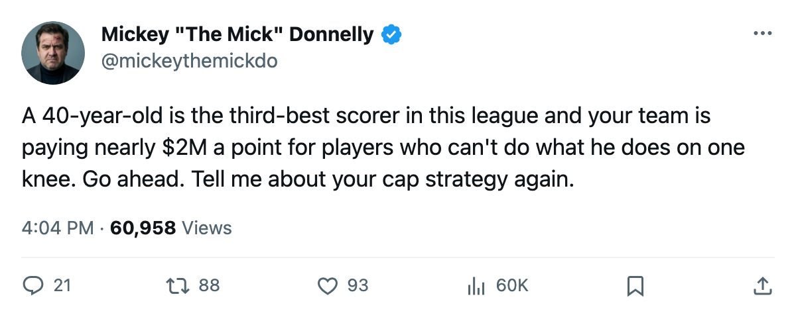
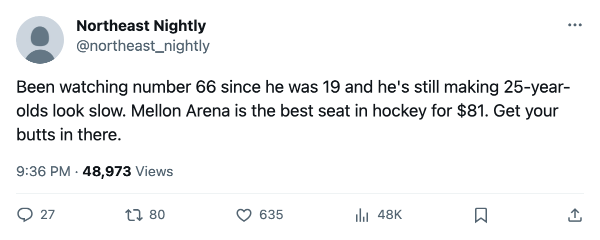

WSH
WSHHE'S 40. HE'S THIRD IN THE LEAGUE. YOUR FRONT OFFICE PAYS TWICE AS MUCH FOR HALF AS LITTLE.
Pittsburgh has the cheapest points in hockey and a 40-year-old who still outpoints your first line for less than the Rangers pay their backup goalie.
Mario Lemieux, 40, 51 points in 35 games

 Mario Lemieux88 is 40 years old. He has 51 points in 35 games for the
Mario Lemieux88 is 40 years old. He has 51 points in 35 games for the  Pittsburgh Penguins Penguins. He plays 22.4 minutes a night and carries a 85 on the Bureau's Book. He is the third-highest scorer in this league and he was drafted first overall in 1984, twenty-one years before most of the kids he is beating could shave.
Pittsburgh Penguins Penguins. He plays 22.4 minutes a night and carries a 85 on the Bureau's Book. He is the third-highest scorer in this league and he was drafted first overall in 1984, twenty-one years before most of the kids he is beating could shave.
Pittsburgh has 45 points on a $48.92M payroll. That's $1.09M per point. Tied with Dallas for the best value in hockey. The  New York Rangers pay $92.95M for 48 points. $1.94M a piece. They are three games behind Pittsburgh in the standings with nearly twice the money in the building.
New York Rangers pay $92.95M for 48 points. $1.94M a piece. They are three games behind Pittsburgh in the standings with nearly twice the money in the building.
Doug Reimer will tell you the Rangers are in a "rebuild window" and their spreadsheet shows future cap flexibility. His spreadsheet does not have a 40-year-old pacing for 119 points on a half-season's salary. My eyes do.
That Lemieux is still good isn't what outrages me. I stopped rubber alongside men who played until their knees told them to go home. The rest of this roster is what outrages me, and what the coach does with it. Brian Holzinger76 carries a 73 on the Book. The coach puts him at K2 center and third-line center.  Kris Beech73 carries a 70 and plays the first penalty kill and the second line. The 73 is below the 70 in the lineup card. That's not a philosophy. That's a coach who doesn't know his own roster.
Kris Beech73 carries a 70 and plays the first penalty kill and the second line. The 73 is below the 70 in the lineup card. That's not a philosophy. That's a coach who doesn't know his own roster.
And the team is on a three-game win streak. 13-10-5, 45 points, fourth in the Atlantic. They play Atlanta tomorrow at Mellon Arena. The  Atlanta Thrashers are 10-18-3 and have scored 82 goals in 34 games. Pittsburgh beat them once and tied once this year. This should not be close.
Atlanta Thrashers are 10-18-3 and have scored 82 goals in 34 games. Pittsburgh beat them once and tied once this year. This should not be close.
The league pays the wrong men
Look at the top of the scoring list again. Lemieux is third.  Martin Straka86 is fifth at 50 points, age 33.
Martin Straka86 is fifth at 50 points, age 33.  Scott Walker84 is twelfth at 44, age 32. These are grown men playing big minutes for money that would not cover the third line in New York or Toronto.
Scott Walker84 is twelfth at 44, age 32. These are grown men playing big minutes for money that would not cover the third line in New York or Toronto.
Meanwhile,  Olaf Kolzig89 makes $6.20M in Washington, carries morale at 76, and his team is 8-20-6. That's one man's salary against Pittsburgh's entire blue line budget. Kolzig plays 65.9 minutes a night because the club can't win and the backup is Josh Harding83, a 21-year-old with +8 on the Development Index who can't get the puck out of his own zone consistently enough to take the job permanently.
Olaf Kolzig89 makes $6.20M in Washington, carries morale at 76, and his team is 8-20-6. That's one man's salary against Pittsburgh's entire blue line budget. Kolzig plays 65.9 minutes a night because the club can't win and the backup is Josh Harding83, a 21-year-old with +8 on the Development Index who can't get the puck out of his own zone consistently enough to take the job permanently.
The Pittsburgh Penguins ticket price is $81. The attendance is 15,678. The building is not sold out. I don't know why. A 40-year-old first overall pick from 1984 is in your arena on a Tuesday night and you're watching from your couch because the game's on television? Go downtown. Sit in the seats. Watch a man who was a superstar when your parents were dating still beat 25-year-olds on a backhand.
The coach still has work to do. Holzinger over Beech is a mistake the lineup card makes every night. But the front office got this one right. They kept a man alive on the ice and they built around what they had instead of throwing money at the first name on the free-agent list.
Pittsburgh hosts Atlanta on 2005-12-30. Pittsburgh wins.

